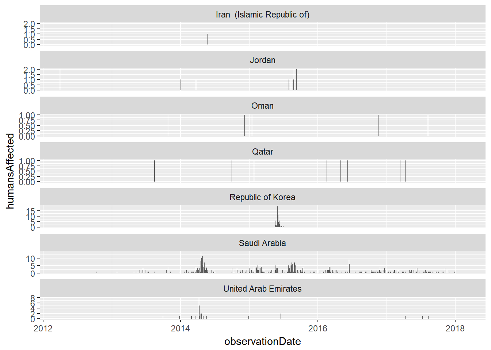
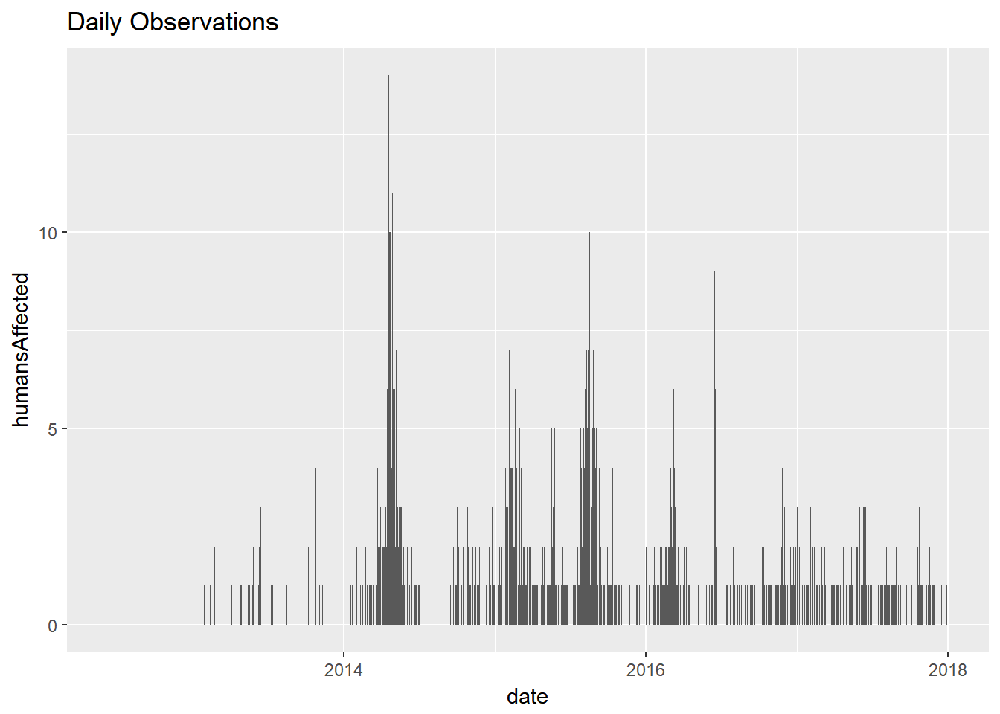
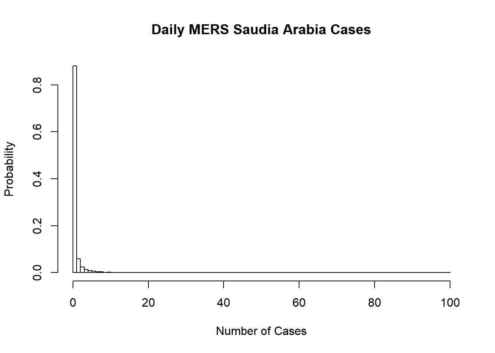
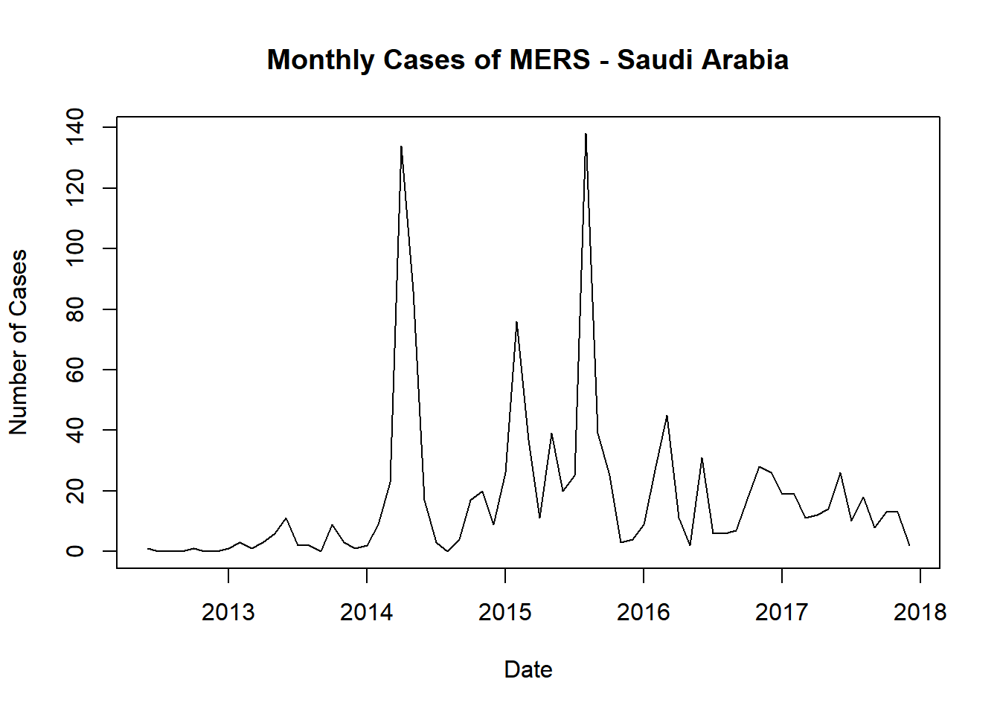
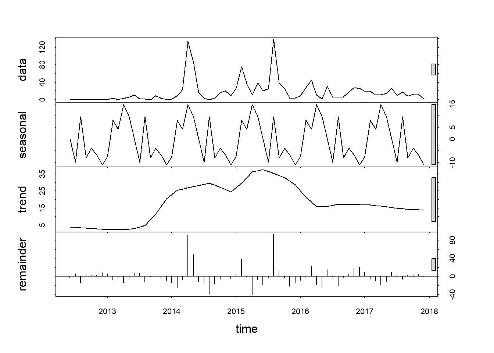
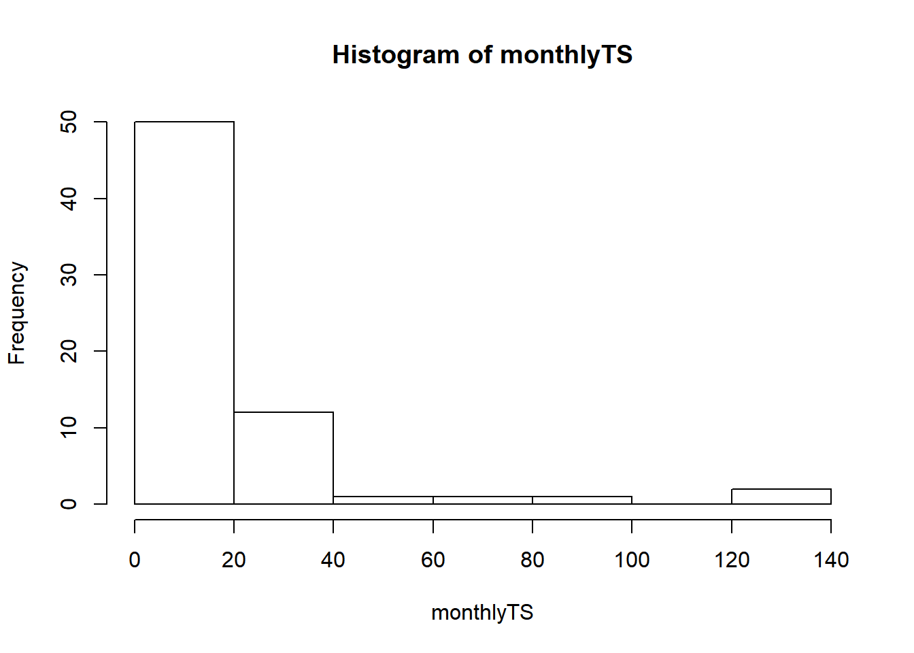
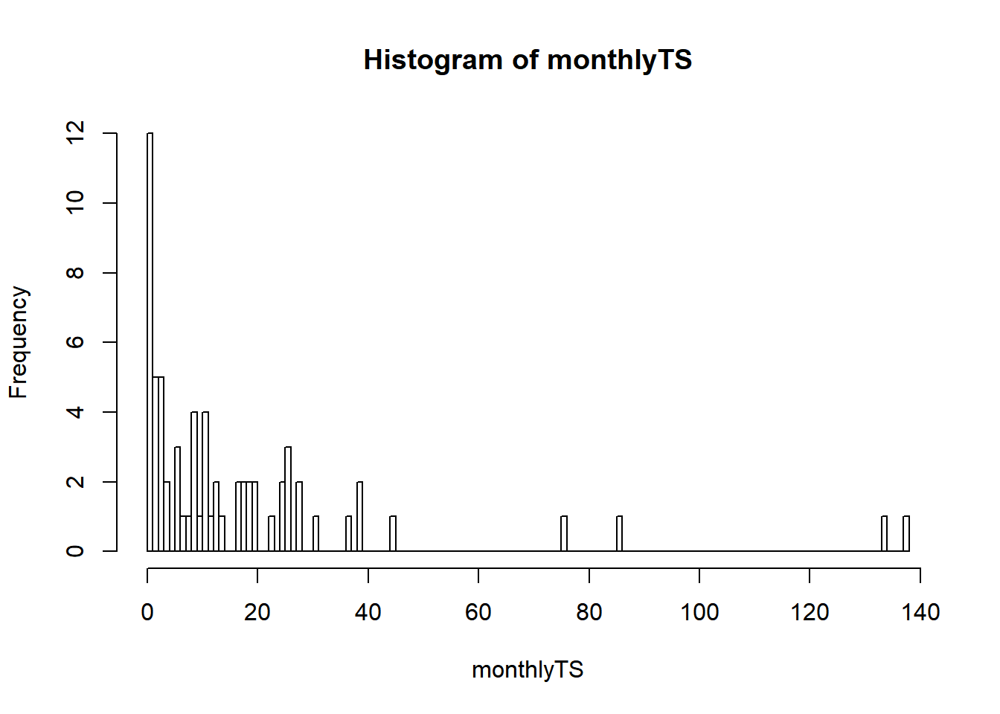
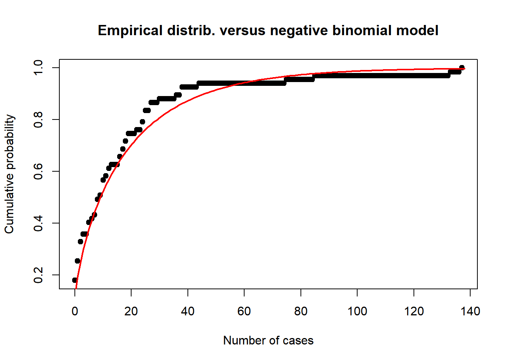
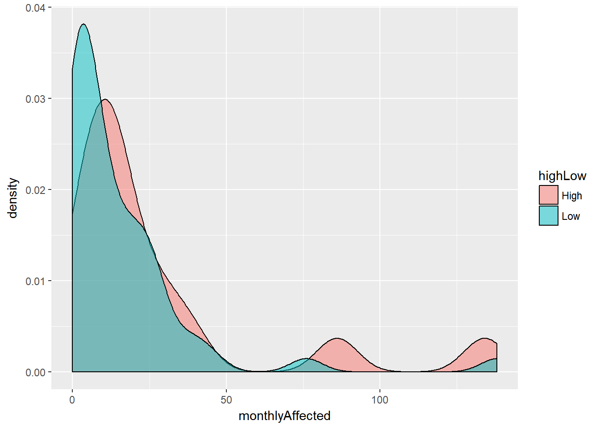

## totPos percentage
## 1 608 0.3000987Aggregate by month and look for seasonality:

## month monthyContrib
## 1 1 -7.3705436
## 2 2 8.0549270
## 3 3 4.2328344
## 4 4 14.8107462
## 5 5 9.7043330
## 6 6 0.2203503
## 7 7 -9.8756246
## 8 8 9.6950922
## 9 9 -8.0183300
## 10 10 -3.8983981
## 11 11 -6.6512653
## 12 12 -10.9041274
## [1] "Negative Binomial AIC: 519.509489693452"## [1] "Poisson AIC: 1961.14826259532"
## Threshold Probs
## 1 Less than 3 0.2490578
## 2 Between 3 and 17 0.4107913
## 3 More than 17 0.3401508## Threshold countProbs arimaProbs
## 1 Less than 3 0.3302 0.2354
## 2 Between 3 and 17 0.4286 0.4256
## 3 More than 17 0.2412 0.3390Months 3, 4, and 5 = high All others = low
## # A tibble: 2 x 5
## highLow mu size muSD sizeSD
## <chr> <dbl> <dbl> <dbl> <dbl>
## 1 High 26.50000 0.8879916 7.147244 0.2915639
## 2 Low 15.07843 0.5898297 2.802464 0.1177074
## Threshold Probs
## 1 Less than 3 0.1258650
## 2 Between 3 and 17 0.3775368
## 3 More than 17 0.4965982